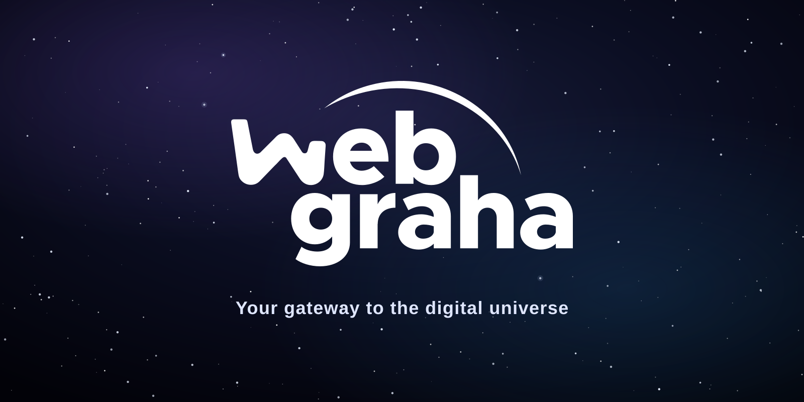

Overview
Who we are
WebGraha is a web design and digital solutions agency. We build single-page experiences, brand systems, and applications for clients who want their digital presence to feel as considered as the rest of their business — quiet confidence over noise, craft over trend-chasing.
Our visual identity is built on an Earth-and-space metaphor: a dark, orbital backdrop that frames every product we ship as a small, well-lit world of its own — "a gateway to the digital universe."
Foundation
Mission, vision & values
Mission
To give every brand a digital presence that feels deliberate — designed with the same precision and restraint as a well-engineered product, not assembled from templates.
Vision
A web where dark, considered design is the default for serious brands — where motion and depth serve clarity instead of competing with it.
Precision
Every pixel, transition, and word earns its place. Nothing ships half-finished.
Elegance
Restraint over decoration. Dark, muted, confident — never loud or trend-driven.
Purpose
Every design decision serves the client's goal first — craft is the means, not the end.
Voice & Tone
How WebGraha speaks
Do
- Write short, declarative sentences.
- Let whitespace and silence do some of the talking.
- Use space/earth metaphors sparingly, only where they add meaning.
Don't
- Don't use exclamation marks or hype language ("amazing", "revolutionary").
- Don't over-explain — trust the reader.
- Don't mix in bright, playful copy that breaks the premium tone.
Logo
Mark & lockup
The mark pairs the "web graha" wordmark with a single sweeping orbit line arcing overhead — a minimal, monochrome signature that reads clearly at a glance and flips cleanly between white-on-dark and black-on-light, with no separate accent color to manage.
Primary lockup on dark (left, logo-full.svg) and light (right, logo-full-light.svg) — the mark's colors never change between versions, only the wordmark color flips.
Never stretch, recolor outside the palette, rotate, or place the mark on low-contrast backgrounds. Below 32px, use the favicon monogram (assets/logo-mark.svg) instead of the full wordmark lockup — the fine strokes in "web graha" disappear at small sizes.
Space lockups

2:1 wide — assets/logo-space-2x1.svgPre-composed lockups — wordmark, orbit line, and tagline on the brand starfield — for social profile images, share cards, and anywhere the mark needs to carry its own background instead of sitting on the site's live starfield.
Color
Palette
Deep Space
#0A1128
Base / background
Twilight Blue
#1C2C5C
Gradient / depth
Pine Green
#2C4C3B
Secondary / icons
Earth Brown
#4A3B2C
Tertiary accent
Signal Emerald
#6EE7B7
CTA / highlights only
Deep Space and Twilight Blue carry every background. Pine Green and Earth Brown are muted, low-saturation accents — never used at full brightness. Signal Emerald is reserved for the one or two highest-priority calls to action per screen.
Typography
Type system
Metropolis Extra Bold — Headings
Your gateway
to the digital universe.
Inter — Body & UI
Crafting digital experiences with precision, elegance, and purpose. Inter carries every paragraph, label, button, and form field — light weights for long-form copy, medium/semibold for UI labels and emphasis.
| Role | Typeface | Size / Weight |
|---|---|---|
| Hero (H1) | Metropolis | 72–96px / Extra Bold |
| Section title (H2) | Metropolis | 30–36px / Extra Bold |
| Card title (H3/H4) | Metropolis | 16–18px / Extra Bold |
| Body | Inter | 14–18px / Light–Regular |
| Label / Caption | Inter | 11–13px / Medium |
UI System
Glass & components
Every floating surface — navigation, cards, widgets — uses the same transparent, lightly-blurred glass: just enough frost to separate content from the starfield behind it, never enough to hide it.
Buttons
Form field
Iconography
Icon & imagery style
Line-weight icons from Font Awesome, always single-color, never filled flat shapes. Imagery favors dark, cinematic renders of Earth and orbit — soft atmospheric rim light, no bright daylight scenes.